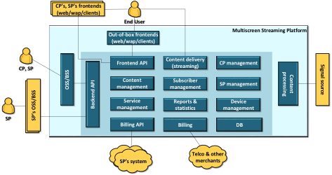
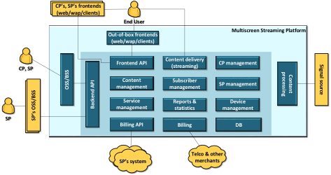

I am a PhD candidate in the Computer Science Department at New Mexico State University. I graduated with my Masters of Computer Science at James Cook University in Australia. My thesis, entitled Data Mining in Internet Banking, is currently being used in a number of Asian banks.
My research interests include Data Mining and Knowledge Discovery(classification, clustering, association rules and prediction models), Artificial Intelligence (knowledge representation and reasoning, planning, logic programming, answer set programming and Web semantics - Services Composition), Machine Learning and Collective Intelligence (recommendation system, discovering groups, searching and ranking, collaborative filtering, document filtering, generative modelling, advanced classification, etc.) and Big-Data processing.
My primary research now focuses on Automation Web Services Composition in Web Semantics. I am developing a completed end-to-end AI system to collect requirements from users in Natural Language and explore workflows that can satisfy the users requirements automatically. After the workflow is achieved, our system is able to execute each Web Service component in workflow sequence in order to achieve the goal.
 
